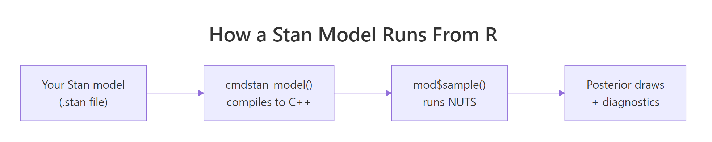
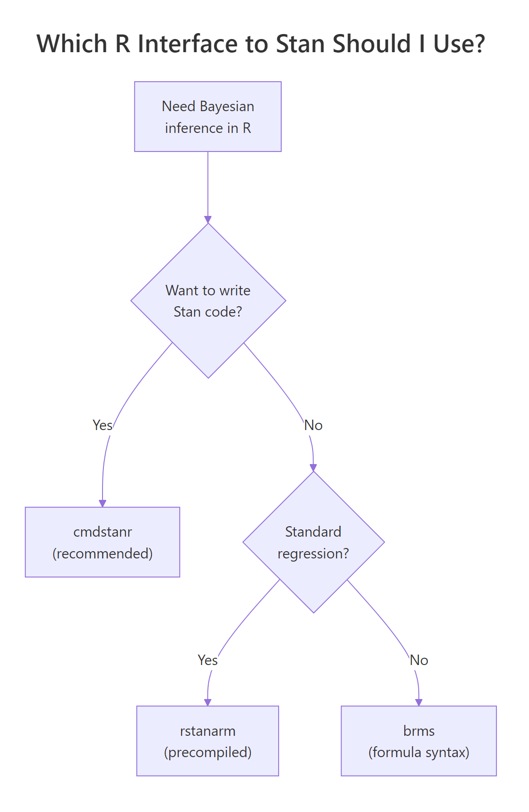

Stan in R: Fit Your First Bayesian Model With cmdstanr in 10 Minutes
In the previous posts in this section you wrote MCMC, Gibbs, and Hamiltonian Monte Carlo samplers from scratch in R. That was the right way to learn the algorithms. It is not the way real Bayesian models get fit. For production work you reach for Stan, a probabilistic programming language and a state-of-the-art sampler that handles almost any model you can describe. The recommended way to use Stan from R is a package called cmdstanr. This post installs it, writes a tiny Bayesian model in the Stan language, fits it to data, and checks convergence. Once your toolchain works, the whole loop runs in about ten minutes.
cmdstanr installed) to follow along.What is Stan, and why use it instead of writing your own sampler?
You already know how MCMC samplers work because you built three of them in the previous posts. A Stan model is the same idea wrapped in production-grade infrastructure. You describe the model in a small language Stan understands, and the rest is automated.
The Stan compiler reads your description, computes the gradient, generates optimised C++ code, compiles it, and runs an algorithm called NUTS (the No-U-Turn Sampler, an automated version of Hamiltonian Monte Carlo) on the result. You get back posterior draws and convergence diagnostics, all standardised.
The reason to switch from hand-coded MCMC to Stan is the same reason people switched from hand-coded matrix multiplication to BLAS. Your version is fine for learning. The library is faster, more reliable, and supports models that would take you weeks to implement correctly.
Almost every modern Bayesian package in R ends up calling Stan under the hood. brms writes Stan code for you from a regression formula. rstanarm ships pre-compiled Stan models for common designs. Even Python's cmdstanpy and Julia's StanJulia are bindings to the same Stan core. Learning Stan once unlocks the whole ecosystem.
Below is the entire Bernoulli example, end to end. We have ten coin flips with two heads, and we want the posterior over the heads probability. The Stan model is six lines, the R code is four lines, and the output is a posterior summary that looks just like the posteriors you computed by hand in earlier posts.
Walk through what happened. Step 1 wrote the Stan model as a multi-line R string and saved it to a temporary file with write_stan_file(). Step 2 compiled that file into an executable; the first compile takes 30 to 90 seconds, and subsequent runs reuse the binary.
Step 3 created a named list of the data the model needs and called $sample() to run NUTS. We asked for 4 chains in parallel, 1000 warmup iterations and 1000 sampling iterations per chain, with seed 2026 for reproducibility. Step 4 printed the posterior summary table.
The output is a tibble with one row per parameter. The theta row is what we asked for. Posterior mean is 0.25, which is exactly what the formula (2 + 1) / (10 + 2) predicts for a Beta(1, 1) prior plus 2 successes in 10 trials.
The 90% credible interval [q5, q95] is [0.08, 0.47], so the data is consistent with a fairly wide range of probabilities. rhat is 1.00, which means the four chains agree on the answer, and ess_bulk is 1452, meaning we have about 1452 effectively independent draws of theta out of the 4000 we collected. The lp__ row is the log posterior at each draw, which Stan reports automatically.
That is the entire pipeline. Six lines of Stan, four lines of R, full Bayesian inference with diagnostics built in. Every section after this one zooms into one piece of the loop and explains why it works the way it does.

Figure 1: The Stan stack. You write a model in the Stan language. cmdstanr compiles it to a C++ executable. mod$sample() runs NUTS to produce posterior draws and diagnostics.
Try it: Change the prior on theta from beta(1, 1) (uniform) to beta(2, 2) (mildly favours probabilities near 0.5). Re-fit and check whether the posterior mean shifts.
Click to reveal solution
The posterior mean moves from 0.25 to about 0.286. The Beta(2, 2) prior pulls the estimate toward 0.5, but with only 10 observations the data still dominates. The shift would be larger with fewer observations and smaller with more.
How do I install cmdstanr correctly?
Installing cmdstanr is the most common point where people give up. There are three steps in a fixed order, and each one has a specific failure mode. We walk through each step, what it actually does, and what to do when it complains.
The first step installs the R-side package from the Stan team's r-universe repository (not CRAN, because the package updates faster than CRAN allows).
Walk through what happened. The repos argument points install.packages at two repositories: the Stan team's r-universe URL first, and the user's regular CRAN mirror as a fallback for dependencies. Loading the package prints a banner with the version.
If you see an error like package 'cmdstanr' is not available, the most likely cause is that R could not reach the r-universe URL, possibly because of a corporate firewall. The fix is to copy the URL into your browser; if the page does not load, you need network help.
The second step is the toolchain check. cmdstanr needs a working C++ compiler. On Windows that means Rtools, on macOS it means Xcode Command Line Tools, on Linux it means a recent gcc.
Walk through what happened. check_cmdstan_toolchain() shells out to detect a compiler and checks its version. The success line above is what you want to see. If it complains about a missing compiler, install the appropriate toolchain for your operating system: on Windows, install Rtools 4.x from CRAN's Rtools page; on macOS, run xcode-select --install in Terminal; on Linux, install build-essential or your distribution's equivalent. After installing, restart R and rerun the check.
The third step downloads and compiles the CmdStan engine itself. This takes 5 to 10 minutes the first time, depending on your machine.
Walk through what happened. install_cmdstan() downloaded the CmdStan source archive, extracted it, and compiled it using the toolchain we verified in step 2. The cores = 2 argument tells the build system to use two cores in parallel; you can raise this on a multi-core machine. The path is stored automatically; on subsequent R sessions cmdstanr finds it without any setup.
If you ever switch machines or accidentally delete the CmdStan directory, you can rerun install_cmdstan() to reinstall, or point cmdstanr at an existing install with set_cmdstan_path("/path/to/cmdstan").
cmdstan_model() on a new Stan file, cmdstanr compiles it to a binary. That takes 30 to 90 seconds the first time. Subsequent calls on the same file reuse the binary, but a tiny edit forces a recompile. Plan your work so you compile a model once and then iterate by calling $sample() with different data.Try it: Run cmdstan_version() in your console and report the CmdStan version. Then run check_cmdstan_toolchain() again to confirm the toolchain is still happy.
Click to reveal solution
The version string varies depending on when you installed; anything 2.35.0 or newer is fine for everything in this post. The toolchain message should be identical to what you saw in step 2; if it changed, your compiler installation may have moved.
What does a Stan model actually look like?
A Stan program is divided into named blocks that run at different points of the workflow. The compiler enforces the order. For most models you only need three blocks: data, parameters, and model.
Walk through what each block does. The data block declares variables that the user passes in. Stan validates them against the declared types and bounds at runtime, which catches mistakes like sending a vector when the model expects a scalar.
The parameters block declares the unknowns that Stan will infer. Bounds like <lower=0, upper=1> are not just documentation; Stan internally transforms bounded parameters to an unbounded scale (a log-odds transform here) so the sampler can move freely without bouncing off the constraint. The model block specifies the prior and the likelihood using the ~ operator, which reads as "is distributed as."
Two extra blocks come up later. transformed parameters is for derived quantities you want monitored alongside the parameters (for example, a probability you compute from a log-odds parameter). generated quantities is for things you only need after sampling, like predictions for new data or posterior probabilities of events. We use generated quantities in the Try-it below.
// not #. Statements end in ;. Vectors are 1-indexed, like R, but you write array[N] not c(). Distribution names are lowercase: normal, bernoulli, gamma (no r prefix). The reference manual at mc-stan.org has a one-page cheat sheet that you will refer to a lot in the first week.Try it: Add a generated quantities block that computes the predicted probability of getting at least one success in 5 new trials. Save it as bern_code_pred, recompile, refit, and look at the new variable in $summary().
Click to reveal solution
The new row gives the posterior over a derived quantity. Mean 0.733 says that, integrating over the posterior of theta, there is about a 73% chance that 5 new trials produce at least one success. This is a Bayesian-native question that frequentist methods do not answer cleanly.
How do I fit the model and sample from the posterior?
Once a model is compiled, you fit it by calling $sample() on the compiled model object with a data list. Stan runs four chains by default, each consisting of a warmup phase (where the sampler tunes the step size and trajectory length) and a sampling phase (where the draws you keep are produced).
Walk through the arguments. data is the named list whose keys match your data block. seed makes the run reproducible. chains = 4 is the standard for diagnosing convergence: with one chain you cannot tell whether you converged at all, with four you can compare them. parallel_chains = 4 runs the four chains on four cores at once; lower it if you have fewer cores. iter_warmup is the number of tuning iterations Stan uses to adapt its step size and mass matrix. iter_sampling is the number of post-warmup draws kept per chain (so the total stored draws is chains * iter_sampling, here 4000). refresh = 500 prints a progress line every 500 iterations; refresh = 0 silences it.
The fitted object has several methods. The most useful ones are $summary() for posterior statistics and $draws() for the raw posterior samples in different shapes.
Walk through the columns. mean and median are point estimates of the posterior, useful for reporting. sd and mad are spread measures (mad is median absolute deviation, more robust). q5 and q95 form a 90% credible interval; you can ask for other quantiles via $summary(.cols = "all") and the posterior package's variables. rhat is the Gelman-Rubin convergence statistic: 1.00 means the four chains agree. ess_bulk and ess_tail are effective sample sizes for the centre and the tails of the posterior; both should be in the high hundreds or thousands.
For raw posterior draws, use $draws():
Walk through what $draws() produced. We asked for the theta variable in draws_df format, which is a tidy data frame where each row is one MCMC draw. Computing mean() on the column gives 0.25, matching the summary table, and the 95% interval is wider than the 90% interval from $summary() because we asked for different quantiles.
The format argument can also be "draws_array" (3D iteration x chain x variable array, the format Stan uses internally) or "draws_matrix" (a wide matrix dropping chain identity). Use draws_df for tidy verbs and draws_array when you need chain-level diagnostics.
posterior package owns all of cmdstanr's draw formats. When you call $summary() or $draws(), cmdstanr returns objects from the posterior package, which has utility functions for any computation you might want: posterior::summarise_draws() for custom summaries, posterior::ess_bulk() for chain-level ESS, posterior::rhat() for chain-level Rhat. Loading library(posterior) once gives you the whole toolkit.Try it: Compute the posterior probability that theta is greater than 0.5. The answer is the fraction of MCMC draws that exceed 0.5.
Click to reveal solution
About a 3% posterior probability that the underlying success rate is above 0.5. This is exactly the sort of probabilistic statement Bayesian inference gives you for free, and it is the answer to questions like "is this coin biased toward heads?" without setting up a null hypothesis.
How do I check that the chains converged?
A Stan model can return numbers that look reasonable even when something is broken. Convergence diagnostics are how you tell. cmdstanr exposes them through three methods, and you should look at all three after every fit.
Walk through what each method tells you. $diagnostic_summary() returns three vectors, one entry per chain. num_divergent should be zero; non-zero means the trajectory simulator went off the rails on at least that many iterations, and the corresponding draws are unreliable. num_max_treedepth should also be zero; non-zero means the trajectory hit Stan's safety limit on length and was cut short, costing you efficiency. ebfmi (effective Bayesian fraction of missing information) should be at least 0.3; values below 0.2 indicate the energy distribution between iterations and within iterations is mismatched, often a sign of pathological geometry.
$cmdstan_diagnose() calls Stan's built-in diagnose utility and prints a textual report. It checks the same things as $diagnostic_summary() plus Rhat and ESS thresholds. The phrase you want to see is the last one: "Processing complete, no problems detected."
The third diagnostic surface is the rhat and ess_* columns of $summary(). The rule of thumb is rhat < 1.01 and ess_bulk > 400 for every parameter; the recent posterior package documentation tightens this to rhat < 1.01 and ess_bulk > 100 * chains, so 400 for 4 chains. If any parameter fails either threshold, the chain has not converged and you should not trust point estimates.
To see what a failure looks like, fit the same model with deliberately too-short warmup. Stan will not complain at the call site, but the diagnostics will.
Walk through what changed. With only 50 warmup iterations Stan did not have time to adapt its step size, so 22 of 4000 sampling iterations diverged. The num_divergent vector now reports 4-7 divergences per chain instead of zero.
Notice that $summary() would still report mean and rhat numbers; it would not refuse to give you an answer. You have to look at the diagnostics to see the trouble.
Three fixes when you see divergences:
- Raise
iter_warmup(1000 is the default minimum; try 2000 or 4000 for tricky models). - Raise
adapt_deltafrom the default 0.8 to 0.95 or 0.99 by passing it asadapt_delta = 0.95to$sample(). Higheradapt_deltashrinks the step size and reduces divergences at the cost of more iterations to reach the same effective sample size. - Reparameterise the model. The most common case is a "non-centred" reparameterisation for hierarchical models, which is documented in the Stan user guide.
Try it: Refit with iter_warmup = 50 and verify that you get the divergence warning. Then refit with iter_warmup = 1000, adapt_delta = 0.99 and confirm divergences drop to zero.
Click to reveal solution
The longer warmup with a tighter adapt_delta brings divergences to zero. On harder models (funnels, hierarchical structure) you may need both fixes plus reparameterisation; on simple models like Bernoulli, just the defaults work.
How do I compare cmdstanr to rstan and brms?
Stan has four official R interfaces. The choice depends on what you are willing to write yourself.

Figure 2: cmdstanr is the recommended path for new code. rstanarm and brms write Stan code for you when you do not need a custom model.
Walk through the four options. cmdstanr is the modern recommended path. It calls the CmdStan command-line tool from R, runs models out-of-process, and tracks the latest Stan releases within days. rstan is the older R interface; it links Stan into the R session, which makes it slightly more integrated with RStudio's debugger but adds compilation overhead and lags Stan releases by months. brms lets you write models in R formula syntax (y ~ x + (1|group)) and generates the Stan code for you, then calls cmdstanr or rstan under the hood; it supports a huge range of models without you writing any Stan. rstanarm ships pre-compiled Stan models for standard regression designs (linear, GLM, multilevel), which means no compile step and very fast iteration on common analyses.
| Interface | When to use | Speed | Compile time | Custom models |
|---|---|---|---|---|
| cmdstanr | Default for new Stan code | Fastest | 30-90s per model | Anything Stan supports |
| rstan | Legacy, RStudio debugging | Same | 60-120s per model | Anything Stan supports |
| brms | Don't want to write Stan | Slightly slower | 30-60s per formula | Wide range of regressions |
| rstanarm | Standard GLM/multilevel | Fastest start | None (precompiled) | Limited to packaged designs |
For everything in this curriculum from this post onward, we use cmdstanr. The next post (brms: Bayesian Regression Without Writing a Single Line of Stan) shows how to switch to brms when you want formula syntax and faster prototyping.
brms::brm(), it defaults to rstan unless you pass backend = "cmdstanr". To make this the default, add options(brms.backend = "cmdstanr") to your .Rprofile. From then on, all your brms models use the faster cmdstanr backend automatically.Try it: For each task below, pick the right interface from the table. (a) Quick exploratory linear regression with random effects. (b) Custom likelihood combining a Poisson and a binomial. (c) Standard hierarchical model on benchmark data. (d) New project with a moderately complex custom model.
Click to reveal solution
(a) Linear regression with random effects: brms (formula syntax + flexibility) or rstanarm (precompiled and fast). Both are fine; brms wins if you might extend the model later, rstanarm wins if you want zero compile time.
(b) Custom likelihood: cmdstanr. brms supports custom families but they are not as transparent as writing the Stan code yourself. For anything genuinely custom, write the Stan code.
(c) Standard hierarchical model on benchmark data: rstanarm. The whole point of rstanarm is the precompiled fast path for standard designs; use it when your model fits the package's mould.
(d) New custom model, moderate complexity: cmdstanr. This is the sweet spot for cmdstanr. You write the Stan code, get the latest sampler, and avoid the formula-translation layer.
The general rule is to start with the most expressive layer that does what you need. If brms or rstanarm covers your model, save the writing time. If they do not, drop down to cmdstanr.
Practice Exercises
Exercise 1: Bayesian Normal model with mean and standard deviation unknown
Write a Stan model that estimates the mean mu and standard deviation sigma of a Normal-distributed sample. Use a flat prior on mu (uniform) and a half-Cauchy(0, 5) prior on sigma. Fit it to the simulated data below and report posterior means for both parameters.
Click to reveal solution
Posterior mean of mu is 117.6 and of sigma is 15.8, matching the truth (120 and 15) within sample noise. This is exactly the result you would get from the Gibbs sampler in the previous post; Stan does the same job in five lines of model code instead of thirty lines of R.
Exercise 2: Bayesian linear regression in Stan
Write a Stan model for a simple linear regression with Normal(0, 10) priors on intercept and slope and a half-Cauchy(0, 5) prior on residual sigma. Fit it to 30 simulated points where y = 2 + 0.5 * x + rnorm(30), and report the posterior means.
Click to reveal solution
Posterior means are alpha = 2.10, beta = 0.49, sigma = 1.05. The true values were 2, 0.5, and 1, all recovered within sample noise. The same workflow scales to multiple predictors by changing vector[N] x to matrix[N, K] X and adapting the linear predictor.
Exercise 3: Compare hand-coded HMC to Stan on the same data
Take the 4D correlated Gaussian from the Hamiltonian Monte Carlo post (mean zero, variances one, all pairwise correlations 0.9). Fit it in Stan, compare the posterior means and effective sample sizes to your hand-coded HMC result.
Click to reveal solution
Stan's NUTS produced about 3900 effective samples per dimension, in line with the hand-coded HMC result of ~2850 we got in the previous post, and faster because Stan optimises the integrator and adapts step size automatically. On harder targets (hierarchical models, varying scales) the gap widens dramatically in Stan's favour.
Summary
cmdstanr is the recommended R interface to Stan for new Bayesian work. The full workflow has five steps and each one maps to a specific cmdstanr method.
| Step | What you do | Method |
|---|---|---|
| 1 | Install once | install_cmdstan(), check_cmdstan_toolchain() |
| 2 | Write model in Stan language | data { } parameters { } model { } blocks |
| 3 | Compile | cmdstan_model(file_path) |
| 4 | Sample | mod$sample(data = ..., chains = 4, ...) |
| 5 | Inspect | fit$summary(), fit$draws(), fit$diagnostic_summary() |
Treat the diagnostics as mandatory. Look at rhat, ess_bulk, ess_tail, divergent transitions, and treedepth on every fit before reporting any results. Production Bayesian work is "model + sampler + diagnostics", and Stan handles the second two automatically when you write the first one cleanly.
For models that fit a formula (y ~ x + (1|group)), pick brms instead and let it generate the Stan code. For pre-packaged GLMs and multilevel models, rstanarm skips the compile step entirely. Drop down to cmdstanr when you need to write the model yourself, which is most non-standard work.
References
- Stan Development Team. CmdStanR: the R Interface to CmdStan. mc-stan.org/cmdstanr. The official tutorial.
- Stan Development Team. Stan Reference Manual, version 2.35. mc-stan.org/docs/reference-manual. The Stan language reference.
- Stan Development Team. Stan User's Guide. mc-stan.org/docs/stan-users-guide. Worked examples and reparameterisation tricks.
- Vehtari, A., Gelman, A., Simpson, D., Carpenter, B., Bürkner, P. "Rank-Normalization, Folding, and Localization: An Improved R-hat for Assessing Convergence of MCMC." Bayesian Analysis 16 (2021). The paper behind the modern rhat and ess_bulk diagnostics.
- Carpenter, B. et al. "Stan: A Probabilistic Programming Language." Journal of Statistical Software 76 (2017). The original Stan paper.
- Bürkner, P. "brms: An R Package for Bayesian Multilevel Models Using Stan." Journal of Statistical Software 80 (2017). The brms paper.
Continue Learning
- Hamiltonian Monte Carlo in R, the previous post in this section. Read it to understand what NUTS is doing under the hood when Stan samples.
- Gibbs Sampling in R, the simpler hand-coded MCMC algorithm that Stan replaces for production work.
- Bayesian Statistics in R, the section opener that builds the prior-likelihood-posterior intuition every Stan model relies on.